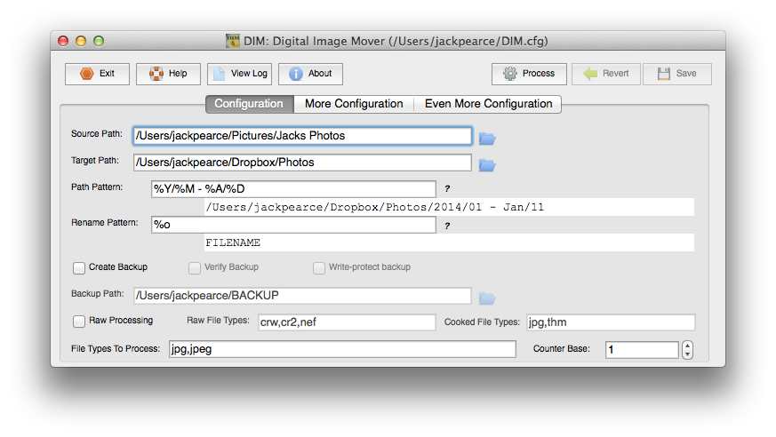

Organising a massive photo collection
I say massive, it’s not actually that big. It does make for a good title though. I’d like to share some of the methods I use to organise my photo collection. Most of the stuff I do is a result of reading somebody’s blog and then implementing in my own way. Organizing my photo collection has been incredibly liberating these past few days. I set out to de-duplicate, sort my photos into some sort of folder structure, shrink their file size down somewhat without affecting the quality of the images and then finally automate this for the future. This article assumes you are using a Mac as most of the software featured here isn’t available on Windows. I also recommend anyone who has a keen interest in this subject to follow Bradley Chambers on Twitter, he shares this passion and invests more time in it than I do.
Like many, this blog post would probably not exist had Everpix not shutdown. Pre-Everpix I had photos stored everywhere, mostly dumped into random folders synced to Dropbox. I would often restore iOS betas to my iPhone, dumping my photos out to randomly named folders before doing so. My dad had 20,000 something photos on his iMac in iPhoto dating back to 2006 which I synced to my Everpix account and then backed up using CrashPlan. Everpix - the be all and end all of photo management software in the cloud. Install the desktop uploader, iOS app - tell it to upload everything - be ignorant to the complete mess behind the scenes. Everpix hid this, allowed you to view your photos with no duplicates, no folder structure, just pure photos. Boy was Everpix a good product. A massive time saver, not fully realised by myself until now.
Exporting Your iPhoto Library
Sven Fechner wrote up an excellent blog post that details how to correctly export your iPhoto library and then sort those photos into a date based folder structure. At first I followed Sven’s method, it involves using Phoshare to export your photos instead of File>Export in iPhoto. The reason behind this is that iPhoto will set Date modified and Date created on all the files it exports to today’s date, this hampers the automated sorting process later on. I have since discovered DIM - Digital Image Mover that can sort photos based on Exif data rather than the Date created / Date modified time stamps.
Sorting your photos into folders
Once you have an export of all your images, or if you do not use iPhoto you may already have all your photos dumped into folders, you’ll want to organise them into subfolders based on Year, Month and depending on the number of photos you have maybe even days. When I first experimented with this I used Hazel to organise my photos into subfolders, as described by Sven. Due to limitations in OS X Spotlight Hazel can only organise photos based on the file’s ‘Date Created’ or ‘Date Modified’ and not Exif data from the image itself such as ‘Date Time Digitized’ and ‘Date Time Original’. Really if you’re going to organise your photos accurately you’ll want to use Exif data as this remain unchanged since your camera first recorded the image, unlike ‘Date Created’ and ‘Date Modified’. For this I used DIM: Digital Image Mover 5.0 Beta.
DIM
I only stumbled across DIM the other day. It looks to of been created in 2001, the latest beta version released Dec 2013 still has a UI from 2001 but that really doesn’t matter. The tasks the software is designed to do it does very well. It sorted my 27,000+ photos into subfolders in less than 5 minutes. The software is very self-explanatory, it will copy your photos by default rather than altering the originals. To speed things up a bit I switched off the Geolocation functionality. This allows you to sort your photos based on Location. You can see which DIM settings I switched on and off here and here.
{kind=link}
{kind=link}
De-duplicating
If like me you have a ton of duplicate photos there are two pieces of software that can help with that.
MacPaw Gemini is an awesome piece of software, you can use it to de-duplicate any file not just photos. Gemini scanned through my 60GB photo collection in less than 1 minute showing me all the duplicates. The software itself is pretty self explanatory and doesn’t require any guidance. Gemini will detect duplicates based on the file itself rather than the image content i.e those that are exactly the same size and share the same MD5 hash. It won’t detect two of the same photo if one has been resized or compressed. For this you need PhotoSweeper.
 Gemini
Gemini
PhotoSweeper is an excellent piece of software that has helped me to remove all my what I call ‘WhatsApp duplicates’. These are low-resolution copies of photos that WhatsApp creates and end up in recipients Camera Roll when you send somebody a photo i.e your partner that syncs their photos to the same Dropbox account as you. PhotoSweeper isn’t as 100% accurate as Gemini. It’s detection methods are based on the image content itself however I found it more than accurate enough to rid my collection of nearly all duplicates.
Saving space
When I first started sorting through my photo collection I told myself I wouldn’t compress or shrink any of my photos. After researching the process behind compressing a JPEG photo I changed my mind. Although I do not fully understand the science behind losslessly compressing a JPEG image I do trust it and the results are amazing. At no point have I shrunk the resolution of any of my photos, only re-organised the ‘huffman tables’ to shrink the size of the file itself. The software I am using is jpegoptim, available as a command line tool for Mac OS X and GUI here. I will show you how to implement an automated workflow using the command line tool.
{kind=link}
Lossless compression (100% quality) produced significant savings in photos where colors are similar across the whole image. I started to experiment with lower quality settings. At 80% I was hitting near 60% space savings on every image I ran through jpegoptim with no visual loss of image quality. I ran a handful of completely different photos from different devices through jpegoptim with a maximum quality of 80%, zoomed in to 100% and could spot no differences to the original. My whole photo collection now comes in at 25.29 GB where as before running this process it was just over 55 GB, that’s just under a 50% reduction in size with no visible loss in photo quality.
Automating this - My Workflow
As I only shoot using my iPhone my workflow is perhaps more simple than most. I use Dropbox to automatically sync my photos and then have a very simple set of Hazel rules that compress, tag and sort my photos from there. Dropbox’s camera upload app is very well made, files are dropped into a ‘Camera Uploads’ folder renamed with the date the photo was taken, extracted from Exif, it also sets the ‘Date Created’ as per Exif.
Rule 1
Rule Name: Compress, tag, move to photos folder
Target: Dropbox/Camera Uploads
Conditions: Extension is jpg
Actions: Run shell script- embedded script:
jpegoptim -m80 -p "$1"Add tags: jpegoptim80
Move: to folder: Dropbox/Photos
The embedded script broken down. jpegoptim calls the executable, -m80 sets quality to 80%, -p “$1”tells jpegoptim to process the file that Hazel has detected in Dropbox/Camera Uploads.
 Hazel Rule
Hazel Rule
Rule 2
Rule Name: once moved to photos, sort into subfolders
Target: Dropbox/Photos
Conditions: Extension is jpg
Actions: Sort into subfolders: date created (2013) ▸ date created (12 - Dec) ▸ date created (01)
 Hazel Rule
Hazel Rule
This sorts the photos into a dated folder structure moved to Dropbox/Photos by Rule #1. Here we can use Hazel because Dropbox has set the Date Created / Date Modified attributes on the file as per Exif.
What about Video?
I’m yet to work out how I can de-duplicate, compress and accurately sort my videos. Nearly 70% of my Dropbox is consumed by video and I’d love to do get that number down. If anybody has a similar workflow for video I’d love to here it.